주요 연혁
- 1985년자생의학회 발족, 추나요법 연구 시작
- 1989년척추치료 한약 청파전 개발
- 1990년역삼동 자생한의원 개원, 특수침법 MSAT 개발
- 1995년한국추나학 및 한국추나학 임상표준지침서 발간
- 1999년자생한방병원 확장 개원
- 2001년신바로한약에서 신바로메틴 발견
- 2003년신바로메틴 미국 물질특허 획득
- 2005년한의사·의사 협진시스템 오픈
- 2007년자생원외탕전실 개설
- 2009년미국 풀러튼 자생통합의료센터 개원
- 2011년신바로캡슐 국내 천연물신약 4호 개발, 식약처 승인
- 2012년경혈주입용 한약 신바로약침 개발
- 2013년급성 요통에 대한 MSAT 치료 연구가 PAIN에 게재
- 2014년MSAT 치료 기기 개발
- 2019년추나요법 국민건강보험 적용
- 2020년글로벌 의학교육 플랫폼 자생메디컬아카데미 오픈
- 2021년미국 ACCME 정식교육기관 인증
과학화·표준화·세계화
과학화
청파험방요결의 처방을 발전시킨 청파전의 효능을 연구하고, 서울대 천연물연구소와 공동연구를 통해 신바로메틴을 발견했습니다. 녹십자와의 8년간 공동연구는 신바로캡슐 개발로 이어졌습니다.
표준화
한의사·의사 협진시스템, 전문 수련병원 교육, 정기적인 의료진 교육과 정보 공유를 통해 진단·치료의 표준화를 추진했습니다.
세계화
해외 대학·의료기관과 의료 교육, 연구, 의료진 연수로 교류했습니다. 2006년 국제진료센터를 개설했으며 언어권별 전담 코디네이터가 진료와 서비스 이용을 지원하는 체계를 마련했습니다. 2018년에는 해외환자유치 우수 의료기관 부문 글로벌헬스케어 유공 대통령 표창을 받았습니다.
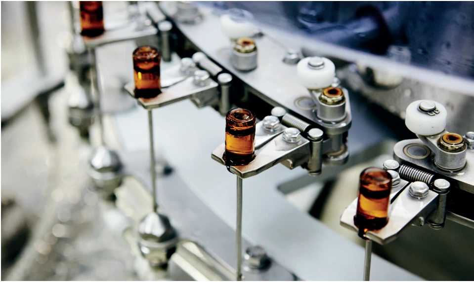
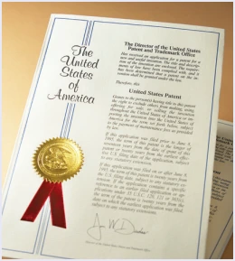
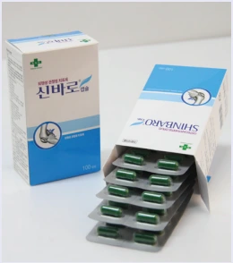
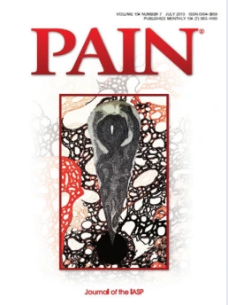
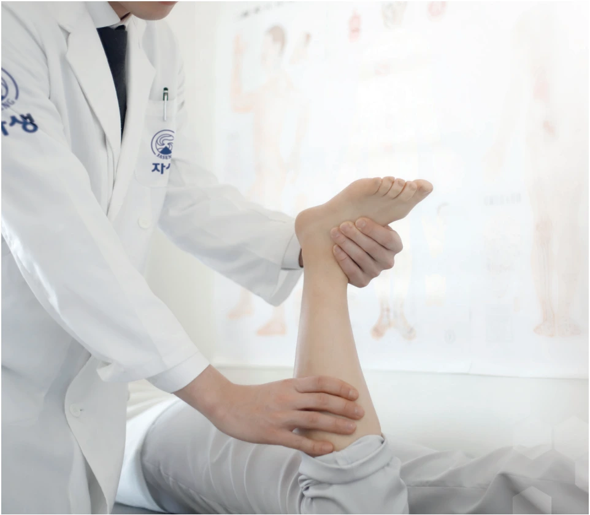
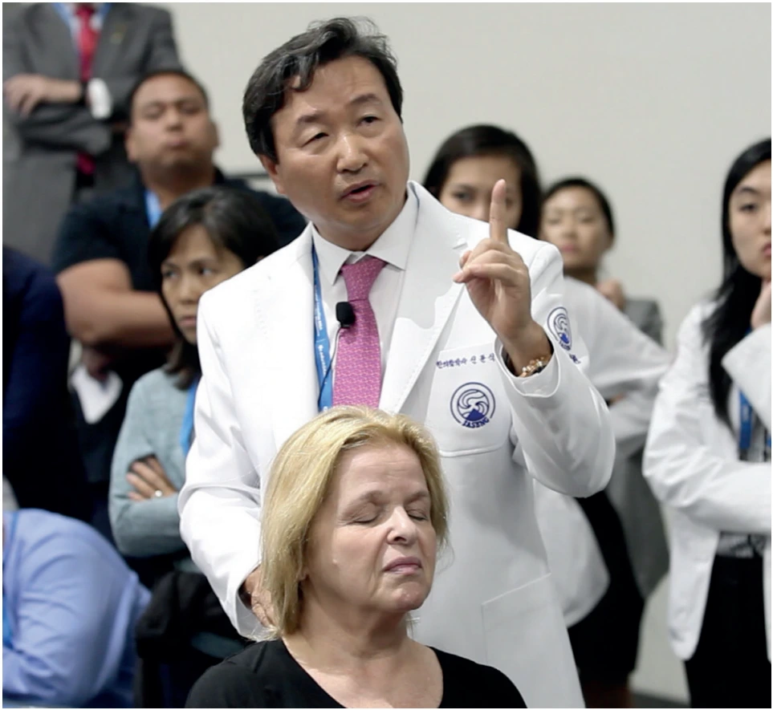
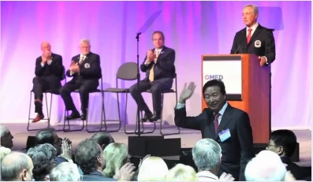
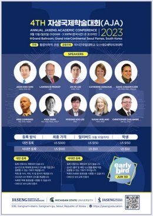
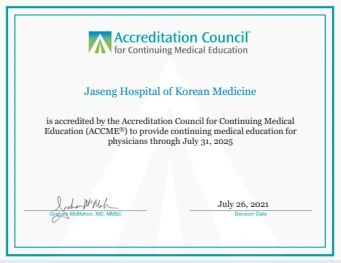
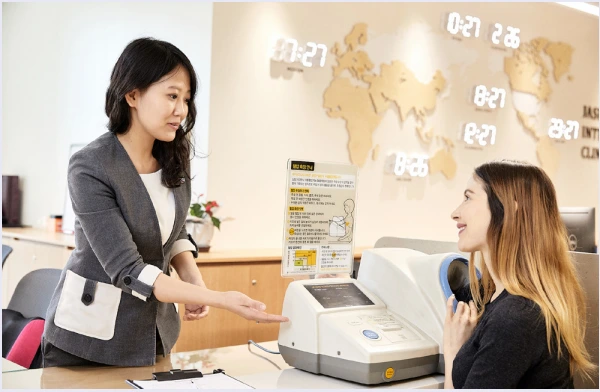
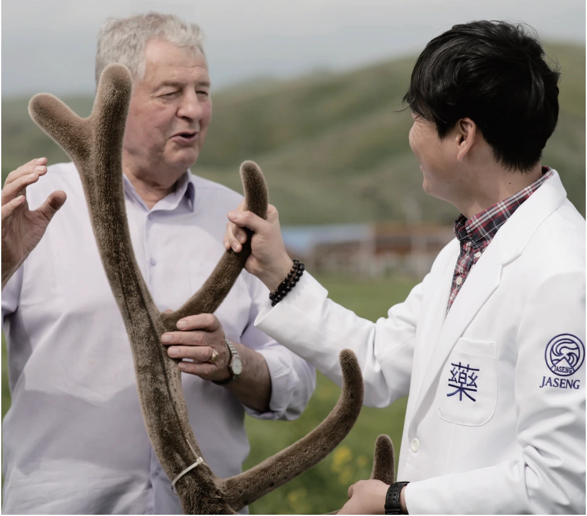
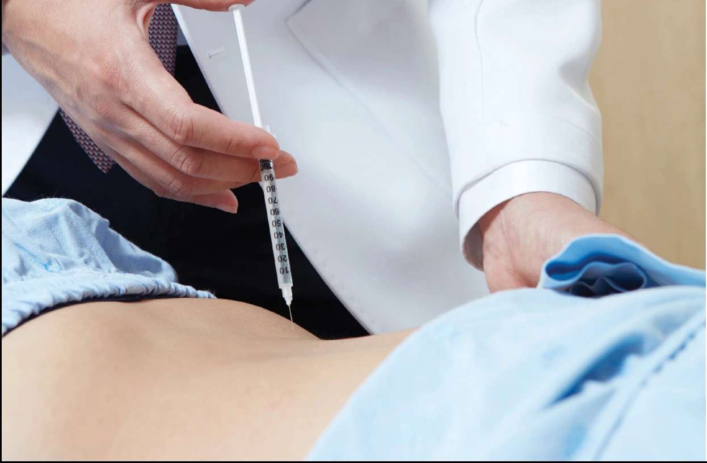